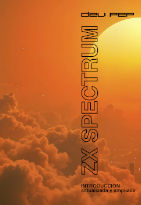
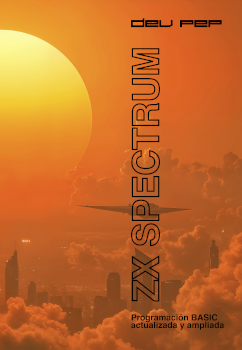

Libros
Aquí te dejo enlaces algunos de mis libros. Puedes descargarte una previsualización, o dirigirte a la página de Amazon donde podrás adquirirlos, si así los deseares.
ZX Spectrum: Introducción actualizada y ampliada

Aunque no es imposible, a medida que pasa el tiempo, va resultando más y más costoso
encontrar la documentación oficial que acompañaba al ZX Spectrum. Estamos hablando de
unos excelentes manuales que dejaron de imprimirse hace décadas.
Lo mismo puede decirse de este entrañable ordenador, que en su día entró en millones de
hogares. Aunque lleva también décadas sin fabricarse, gracias a muchos entusiastas y
nostálgicos de la computación retro podemos seguir disfrutando de este maravilloso producto,
a través de equipos restaurados, nuevos clones y réplicas, o incluso de emuladores
completamente fidedignos.
La documentación, pues, no podía ser una excepción a este renacimiento. Este nuevo manual
introductorio, así como el manual de programación BASIC actualizada y ampliada, pretenden
cubrir todas las explicaciones contenidas en la documentación original, y además ofrecer
una información ampliada y actualizada sobre la realidad presente del Spectrum. En la presente
guía se ha incluido una breve historia de este pequeño ordenador, un repaso general a sus
componentes principales y unas nociones sobre el funcionamiento y programación del Spectrum.
Esta serie de libros (introducción y manual BASIC) puede resultar útil para formar parte del
empaquetado de unidades reparadas o reacondicionadas de Spectrum 16K/48K o Spectrum+, así como
acompañar a nuevos clones o recreaciones de estos dispositivos.
ZX Spectrum: Programación BASIC actualizada y ampliada

Este manual de programación BASIC del ZX Spectrum es la continuación natural de la
Introducción actualizada y ampliada. Ambas obras pretenden cubrir la totalidad de la
información contenida en la documentación oficial que acompañaba tradicionalmente al
Spectrum en los años 80.
El objetivo de este libro es ofrecer una visión exhaustiva de los conceptos relacionados
con la programación BASIC de este ordenador de 8 bits. Los distintos temas se presentan
de forma que tanto principiantes como usuarios más expertos puedan encontrar toda la
información que precisen. Así, las explicaciones no se limitan a una mera descripción
del lenguaje, sino que se profundiza en detalles relevantes que pueden resultar de utilidad
o satisfacer la curiosidad de lectores más avanzados.
Además de lo expuesto en cuanto al lenguaje, se dan unas breves pinceladas sobre
nuevas ideas y posibilidades que en su época no existían: uso de emuladores, nuevos métodos
de almacenamiento de programas, aplicaciones modernas, programación en editores externos,
compilación cruzada, etc.
Esta serie de libros (introducción y manual BASIC) puede resultar útil para formar
parte del empaquetado de unidades reparadas o reacondicionadas de Spectrum 16K/48K o Spectrum+,
así como ir incluidas en cajas con nuevos clones o recreaciones de estos dispositivos.